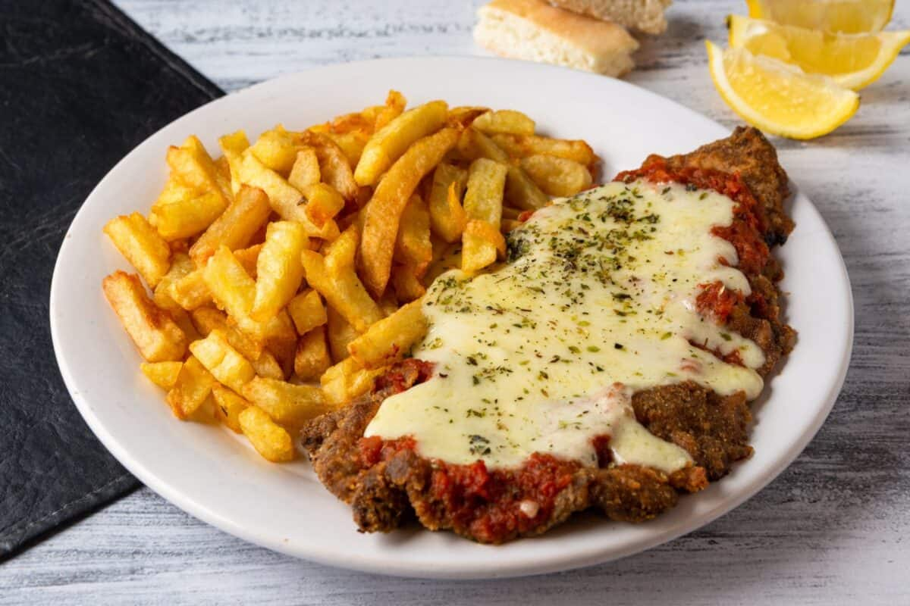

Milanesa Napolitana
Go back to Odin Recipes

Description
Argentinian classic recipe that is one of the best lunch you will ever learn how to
You can combine this plate with pasta, mashed potatoes, salad.
Ingredients
- 1kg Top round
- 2 Eggs, Milk, Seasonings, Mustard
- Breadcrumbs
- Smashed tomatoes
- Shredded Cheese
Steps
- Gather all ingredients
- Fill a large pot with 2 eggs, beat the eggs and mix with de milk and seasonings. Put the beef and let it rest at least 30 minutes in the fridge.
- Meanwhile, preheat the oven to 180° Celcius and fill a large plate with the breadcrumb.
- Dip the beef into the breadcrumb and gently press down to coat each side. Let it rest in the fridge 30 minutes
- Put the milanesas at the oven and wait till they look goldy.
- Once they are goldy put the tomatoe sauce upon them and and the chees over the tomatoe sauce.
- Put them back to the oven and wait until the cheese is melted.
- Take it back from the oven and serve. Enjoy you milanesas!
For more recipes check the recipes below
Enjoy!